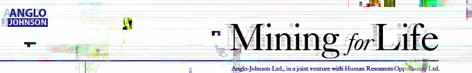
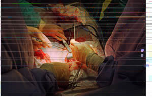
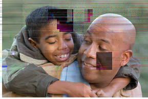

 |
|
|
|
|
 |
 |
|
|
We have conversion options to meet various levels of need and involvement:
Blo od:
Marrow:
Co rnea:
Kidney:
Skin:
The blood donation requires yo
pay is 12₤ (paid in Anglo-Johnson certificates, good on company property.) Donations cannot
be made more than once
50₤ A-J Certificate. During donation, donor will have access to free snacks and beverages.
The bone marrow donation requires you be negative fo
infection. The pay is 40₤ base with a 20₤ bonus for 55% or hi
as determined by genetic analysis (paid in Anglo-Johnson certificates, good on company
property).
A cornea donation requires you pass an opthalmic exam and be in overall good health. The
pay is 120₤ base with a 30₤ boxnus for donors under the age of 25 (paid in Anglo-Johnson
certificates, good on company proper
A kidney donation requires you be negative for HIV, Hepatitis, TB, or parasitical infection. As a
special bonus for the co
will live within the compound and the donor’s immediate family (defined as leg
children, or in the case of a donor between 14 and 18 years of age, siblings and parents*) will
be issued meal vouchers (good on company property).
During the duration of the conversion and follow-up, the donor will live in the compound. Donor
will also be paid 200₤ per day which can be used to pay for up to t
members* to live within the compoun
demand.
* Children will be subject to DNA QwikTest ™ to determine blood relationship with at least one parent, or parent must show
internationally recognized court documents of adoption.
Individuals who complete three different conversion options automatically guarantee
themselves or a family
member employment at A-J, if a job opening exi
Anglo-Johnson Ltd., providing life-saving options for familixes in South Africa
We have conversion options to meet various levels of need and involvement:
Blood:
Marrow:
Cornea:
Kidney:
Skin:
The blood donation requires you be negative for HIV, Hepatitis, TB, or parasitical infection. The
pay is 12₤ (paid in Anglo-Johnson certificates, good on company property.) Donations cannot
be made more than once a month. Anyone who reaches the 2 litre donation level will receive a
50₤ A-J Certificate. During donation, donor will have access to free snacks and beverages.
The bone marrow donation requires you be negative for HIV, Hepatitis, TB, or parasitical
infection. The pay is 40₤ base with a 20₤ bonus for 55% or higher European genetic make-up
as determined by genetic analysis (paid in Anglo-Johnson certificates, good on company
property).
A cornea donation requires you pass an opthalmic exam and be in overall good health. The
pay is 120₤ base with a 30₤ bonus for donors under the age of 25 (paid in Anglo-Johnson
certificates, good on company property)
A kidney donation requires you be negative for HIV, Hepatitis, TB, or parasitical infection. As a
special bonus for the conversion, during the duration of the conversion and follow-up, the donor
will live within the compound and the donor’s immediate family (defined as legal spouse and
children, or in the case of a donor between 14 and 18 years of age, siblings and parents*) will
be issued meal vouchers (good on company property).
During the duration of the conversion and follow-up, the donor will live in the compound. Donor
will also be paid 200₤ per day which can be used to pay for up to two other immediate family
members* to live within the compound. Rates may vary based on quantity of conversion and
demand.
* Children will be subject to DNA QwikTest ™ to determine blood relationship with at least one parent, or parent
must show
internationally recognized court documents of adoption.
Individuals who complete three different conversion options automatically guarantee themselves or a family
member employment at A-J, if a job opening exists.
Anglo-Johnson Ltd., providing life-saving options for families in South Africa